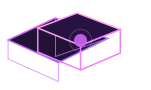
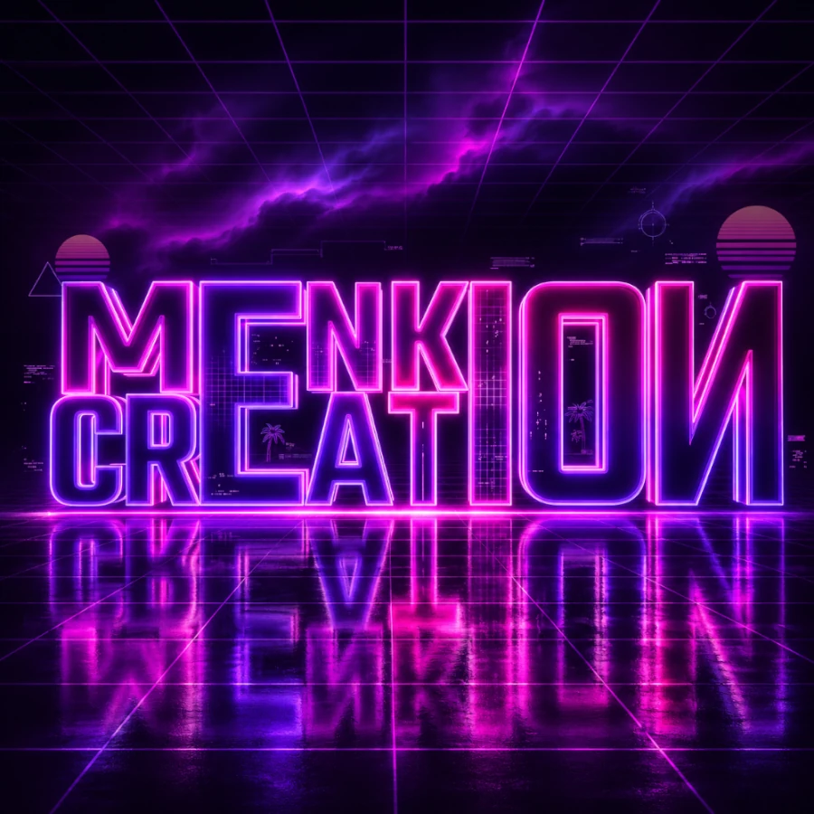

CONCEPTO VISUAL · NO CAPTURAPrototipo funcional · En desarrollo
OS Menkion
Exploramos una experiencia de escritorio tridimensional sobre Linux, Godot y Wayland, con interacción y múltiples pantallas.
Ver proyecto ↗Menkion Creations es un espacio para imaginar y desarrollar software experimental, experiencias interactivas y proyectos que desafían la forma habitual de relacionarnos con la tecnología.

No buscamos fabricar una copia de lo que ya existe. Queremos explorar nuevas formas de interacción, conservar nuestra identidad visual y abrir espacio para que otras personas también puedan crear.
Investigamos, desarrollamos prototipos y mostramos el proceso sin ocultar que los proyectos están en distintas etapas. Lo importante es aprender, construir y comprobar qué funciona.
Aspiramos a ofrecer herramientas accesibles y espacios para compartir objetos, entornos y experiencias. Nuestra idea para OS Menkion es mantener el software base gratuito y explorar aportes voluntarios y contenido comunitario.
Cada proyecto tiene su propia página con su concepto, avances y siguientes objetivos. Las ilustraciones son referencias visuales, no capturas del software.

CONCEPTO VISUAL · NO CAPTURAExploramos una experiencia de escritorio tridimensional sobre Linux, Godot y Wayland, con interacción y múltiples pantallas.
Ver proyecto ↗ CONCEPTO VISUAL · NO CAPTURA
CONCEPTO VISUAL · NO CAPTURAInvestigamos una interfaz móvil experimental sin perder de vista la compatibilidad y la seguridad del ecosistema Android.
Ver proyecto ↗ CONCEPTO VISUAL · NO CAPTURA
CONCEPTO VISUAL · NO CAPTURAUn proyecto creativo de videojuego que explora inventarios tridimensionales, objetos interactivos y mundos por descubrir.
Ver proyecto ↗Los proyectos se encuentran en diferentes etapas. Si quieres ayudarnos a seguir experimentando, puedes apoyarnos voluntariamente en Patreon, compartir la página o simplemente acompañar nuestros avances.